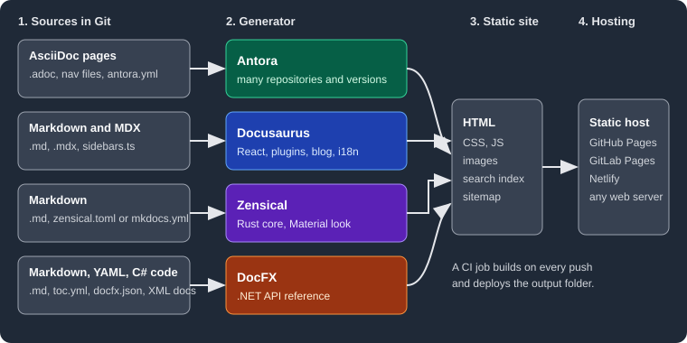

Documentation Tools Overview
|
This content was generated with the assistance of AI and should be verified against the official documentation before being relied on in production. |
This page explains the idea behind the Documentation Tools section, docs as code, and helps you choose which subsection to read. The comparison puts the four tools side by side.
Docs as code
Docs as code means treating documentation like source code: the pages are plain text files kept in a Git repository next to the code they describe, changed through branches and pull requests, reviewed by the same people, and built into a site by a CI job on every push. A static site generator reads those files, resolves links between them, applies a theme and writes a folder of HTML, CSS and JavaScript that any static host can serve. The benefits are the ones code already enjoys: history and blame, review before publishing, the documentation of version 2 living on the branch of version 2, and a build that fails when a link is broken.

This section covers four generators that fill that role in different ways. All version numbers below are the baselines the pages were written against; they were checked on 2026-10-26.
-
Antora 3.2.1 builds a site from AsciiDoc kept in one or many Git repositories and branches, and models the result as versioned components and modules. It is the tool behind this site. Its look comes from a UI bundle, a ZIP of Handlebars templates, CSS, JavaScript and fonts that has its own subsection here.
-
Docusaurus 3.10.2 is a React-based generator for Markdown and MDX with docs, blog and custom pages, versioning, internationalisation, a plugin system and component swizzling. Version 3.10 is the last 3.x minor release; version 4 exists only as canary builds.
-
Zensical 0.0.72 is a Python-installed generator with a Rust core, made by the authors of Material for MkDocs. It reads Markdown and can read an existing
mkdocs.yml. It is in alpha, and version 0.1.0 was announced for 2026-11-05. -
DocFX 2.81.0 is a community-maintained .NET tool that builds Markdown plus API reference pages generated from .NET assemblies and their XML documentation comments (and REST API pages from Swagger 2.0 files).
Which subsection should I read?
| If you need … | Read |
|---|---|
Documentation spread over many repositories and versions, written in AsciiDoc |
Antora, then its UI Bundle pages to change the look of the site |
A product site with docs, a blog, translations and React components |
|
A fast Markdown site, a Python project, or a way off Material for MkDocs |
Zensical and its migration page |
An API reference generated from C# or other .NET code |
|
A side-by-side view with dated numbers |
|
A one-page printable summary |
All pages use one running example, Pocket Units, a small units-conversion library with a C# and a Python implementation, so the same content can be compared as it is built four ways.